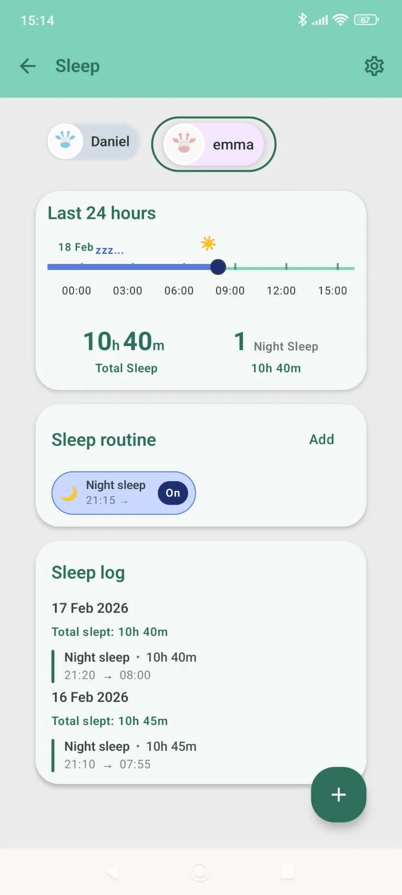

- Inicio
- Herramientas
- Planificador de ventanas de sueño
Herramienta de sueño
Planificador de ventanas de sueño por edad
Estima ventanas de vigilia y estructura de siestas por edad para un sueño más predecible.
¿Prefieres un seguimiento automático?Raffy anota siestas y ventanas de sueño día a día.
Descarga RaffyRevisa la edad
Corrige el campo marcado y vuelve a pulsar Generar plan.
Aquí aparecerá tu plan
Introduce la edad de tu bebé y pulsa Generar plan para ver sus ventanas de vigilia y el número de siestas.

Qué calcula el planificador de ventanas de sueño
Introduce la edad de tu bebé en meses completos (0 a 36) y el planificador muestra un número típico de siestas al día y una ventana de vigilia típica, es decir, el tiempo que un bebé puede estar despierto con comodidad entre un sueño y otro, además de dos consejos prácticos para esa edad.
Da un rango, no un horario. Los bebés de la misma edad son muy distintos, así que toma los números como punto de partida y fíjate en las señales de sueño de tu bebé.
Cómo funciona
El planificador busca la edad de tu bebé en cinco tramos de edad. Estos son exactamente los valores que usa.
| Edad (meses) | Siestas al día | Ventana de vigilia | Consejos que muestra |
|---|---|---|---|
| 0 a 3 | 4-6 | 45-90 min | Mantén rutinas cortas y calmadas antes de dormir. Prioriza la exposición a la luz durante el día. |
| 4 a 6 | 3-4 | 1.5-2.5 h | Protege la primera siesta de la mañana. Empieza una señal constante para la hora de dormir. |
| 7 a 11 | 2-3 | 2-3.5 h | Ancla una hora fija de despertar. Usa una siesta puente de 10-20 minutos si hay mucho cansancio. |
| 12 a 18 | 1-2 | 3-4.5 h | Es habitual una siesta larga al mediodía. Mantén la hora de dormir estable los 7 días. |
| 19 a 36 | 1 | 4-6 h | Evita siestas tardías que retrasen la noche. Usa una rutina tranquila antes de dormir. |
No existe un estándar oficial de ventanas de vigilia. Ni la AEP en la página citada abajo, ni la AAP, el NHS o la OMS las publican, así que estos rangos reflejan la práctica habitual en recursos de sueño infantil. Las fuentes de abajo solo recogen pautas generales sobre el sueño del bebé.
Ejemplo práctico
Bebé de 6 meses. La herramienta muestra Siestas sugeridas: 3-4 y Ventana de vigilia: 1.5-2.5 h, con los consejos «Protege la primera siesta de la mañana.» y «Empieza una señal constante para la hora de dormir.» Los seis meses entran en el tramo de 4 a 6 meses.
Preguntas frecuentes
¿Cuánto tiempo debe estar despierto un bebé de 6 meses entre siestas?
El planificador sugiere entre 1,5 y 2,5 horas para bebés de 4 a 6 meses. Es un rango típico, así que acórtalo si tu bebé muestra señales de cansancio antes.
¿Son las ventanas de vigilia una regla estricta?
No. Son una pauta orientativa. Las señales de sueño, la salud y cómo ha sido el día de tu bebé importan más que el reloj.
¿Por qué se alargan las ventanas de vigilia con la edad?
Los bebés mayores pueden estar despiertos más tiempo con comodidad y necesitan menos siestas. Por eso el número de siestas de la tabla baja a medida que crece la ventana de vigilia.
¿Sirve el planificador para bebés prematuros?
Solo usa la edad en meses. Si tu bebé nació prematuro, pregunta a tu pediatra qué edad usar, ya que muchos profesionales emplean la edad corregida durante los dos primeros años.
La seguridad, primero
Esta herramienta es educativa y no diagnostica nada. Acuesta siempre a tu bebé boca arriba sobre una superficie firme y plana. Habla con tu pediatra si cuesta despertar a tu bebé, si está muy irritable o si hay cambios bruscos en su sueño o su alimentación.
Fuentes
- Asociación Española de Pediatría · En FamiliaFases del sueño
- Academia Estadounidense de Pediatría · HealthyChildren.orgConsejos para hacer dormir a su bebé
- NHS (Reino Unido)Helping your baby to sleep (en inglés)
- Organización Mundial de la SaludGuidelines on physical activity, sedentary behaviour and sleep for children under 5 years of age (en inglés)
Última revisión: 27 de octubre de 2026. Esta herramienta es educativa, no es consejo médico. Política editorial
¿Necesitas una app completa para el seguimiento del bebé?
Raffy conecta curvas de crecimiento, tomas, sueño y notas médicas en un solo lugar.
Gratis · Android